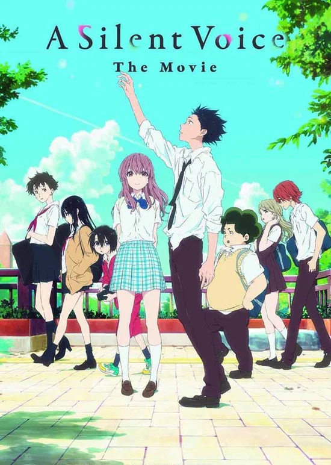
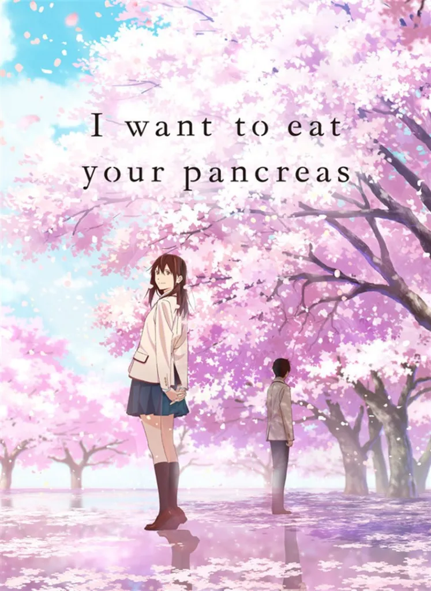
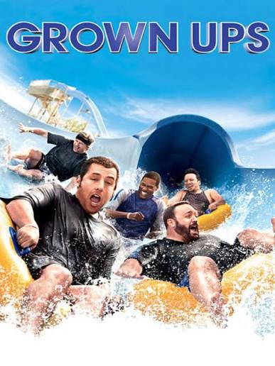

הסרטים המומלצים שלנו
כאן תמצאו סרטים שכדאי לראות- עם תקציר, ז'אנר ודירוג. ברוכים הבאים לMovieBox

קול שקט (a silent voice)
שנה:2016
ז'אנר:רומנטיקה, דרמה
דירוג:8.2🌟
הסרט עוקב אחר נער שהתעלל בילדה חירשת בילדותו, ויוצא במסע מרגש לכפר על מעשיו ולפתוח את ליבו מחדש כנגד השנאה העצמית והאשמה.
לעמוד הסרט ב-IMDB
איש הברזל (iron-man)
שנה:2008
ז'אנר:אקשן, מדע בדיוני
דירוג:7.9🌟
תעשיין נשק עשיר ושחצן שנחטף על ידי ארגון טרור, ובונה חליפת שריון מתקדמת כדי להימלט — חוויה שמניעה אותו להקדיש את חייו ואת המדע שלו להגנה על העולם כגיבור-על.
לעמוד הסרט ב-IMDB
אני רוצה לאכול את הלבלב שלך (i want to eat your pancreas)
שנה:2018
ז'אנר:רומנטיקה, דרמה
דירוג:8.1🌟
נער תיכון מתבודד מוצא את יומנה הסודי של חברתו לספסל הלימודים, סאקורה, ומגלה שהיא סובלת ממחלת לבלב סופנית
לעמוד הסרט ב-IMDB
מגודלים (grown ups)
שנה:2010
ז'אנר:קומדיה, דרמה
דירוג:6🌟
גבר שאיבד את מאמנו המיתולוגי לכדורסל מילדותו מתאחד עם ארבעת חברי ילדותו ובני משפחותיהם לסוף שבוע של סופשבוע ארוך בבית אגם, שם הם מגלים מחדש את הילד שבתוכם.
לעמוד הסרט ב-IMDB
דדפול (deadpool)
שנה:2016
ז'אנר:אקשן, קומדיה
דירוג:8🌟
שכיר חרב שסובל מעיוות קשה בעקבות ניסוי שהעניק לו כוחות-על יוצא למסע נקמה אכזרי ומצחיק באיש שהרס את חייו.
לעמוד הסרט ב-IMDB